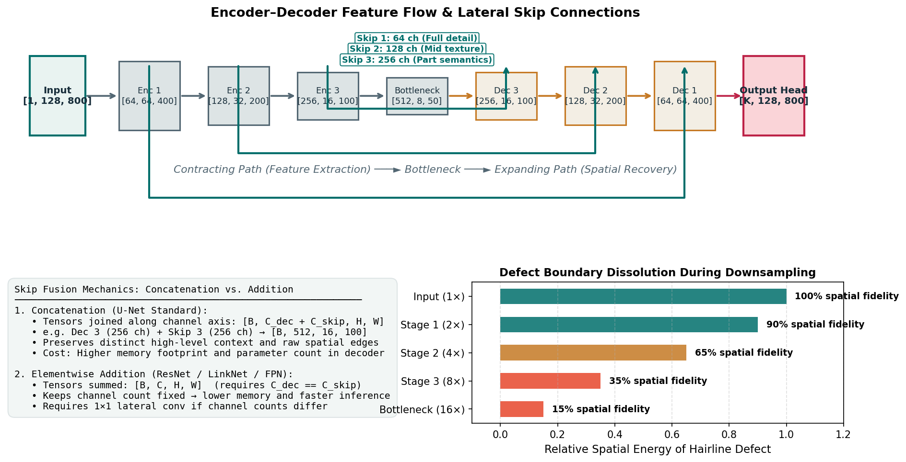

Encoder–Decoder Architectures for Industrial Segmentation
In Milestone 2, you assembled a foundational segmentation pipeline: feeding line-scan strips through a basic convolutional network, thresholding probabilities, and packaging predictions into run-length encodings. However, industrial anomaly detection poses a severe spatial paradox: how can a neural network capture global contextual information across an \(800\)-pixel wide steel sheet while simultaneously preserving the sub-millimeter edge boundaries of a 2-pixel wide hairline scratch?
Standard classification networks solve recognition by discarding spatial resolution through pooling and strided convolutions. If you apply that strategy directly to segmentation, boundary localization is permanently destroyed.
This guide explores the architectural engine designed to resolve this paradox: the encoder–decoder network with lateral skip connections. You will learn how feature hierarchies contract and expand, trace exact tensor shapes through an anisotropic industrial strip (\(128 \times 800\)), dissect the mathematical differences between skip concatenation and addition, and diagnose spatial misalignment bugs before they degrade your validation scores.
1. The Spatial Dilemma: Why Classification Features Cannot Segment
To understand why segmentation models require a two-part architecture, consider what happens inside a standard image classification model (such as an ImageNet classifier):
Classification Paradigm (Translation Invariant):
Input [1, 128, 800] ──► Downsample (32×) ──► Global Average Pooling ──► Class Vector [C]
(All spatial coordinates destroyed!)Classification networks are deliberately engineered to be translation invariant: whether an inclusion defect sits at the far left edge (\(x=12\)) or near the center (\(x=400\)), the classification label is still "defect_c". To achieve this invariance, the network repeatedly pools features, expanding the receptive field until each neuron summarizes the entire image into a 1D vector.
In contrast, semantic segmentation is fundamentally translation equivariant: if a scratch shifts 10 pixels to the right, the predicted mask must shift by exactly 10 pixels to the right. Global pooling is fatal to segmentation because spatial coordinates \([y, x]\) cannot be recovered from a single scalar summary.
Segmentation Paradigm (Translation Equivariant):
Input [1, 128, 800] ──► Feature Extraction ──► Spatial Reconstruction ──► Pixel Mask [K, 128, 800]
(Contracting Path) (Expanding Path) (Every pixel localized)To output a pixel-aligned mask, a model must achieve two opposing objectives:
- High Semantic Abstraction: Distinguish true metallurgical anomalies from harmless surface glare, rolling oil stains, and sensor noise (requiring a large receptive field).
- Millimeter Spatial Precision: Delineate exact defect borders, preserving thin cracks that may span only 1 to 3 pixels in width (requiring high spatial resolution).
2. The Encoder–Decoder Paradigm
The universal solution to this dual requirement is the encoder–decoder architecture (pioneered by Long et al., 2015 with Fully Convolutional Networks, and refined by Ronneberger et al., 2015 with U-Net).

Figure 1.1: The Encoder–Decoder architecture for industrial strip segmentation (\(128 \times 800\)). The contracting path captures semantic defect context, the expanding path restores spatial dimensions, and lateral skip connections preserve high-frequency boundary details.An encoder–decoder comprises three distinct functional zones:
1. The Contracting Path (Encoder)
The encoder acts as a hierarchical feature extractor. As input tensors propagate through successive convolutional blocks and downsampling layers (typically \(2\times 2\) max pooling or strided convolutions with stride 2):
- Spatial Resolution Decreases: Height and width are progressively halved (\(H \to H/2 \to H/4 \dots\), \(W \to W/2 \to W/4 \dots\)).
- Channel Depth Increases: The number of feature channels grows (\(1 \to 64 \to 128 \to 256 \to 512\)).
- Receptive Field Expands: Early layers respond only to tiny local patches (edges, gradients), whereas deep layers view large regions of the strip (textural irregularities, long structural defects).
2. The Bottleneck
The bottleneck represents the transition point between contraction and expansion. It possesses the smallest spatial resolution and the largest channel capacity (e.g., \(8 \times 50\) pixels with \(512\) channels for a \(128 \times 800\) input). At this stage, spatial coordinate fidelity is at its lowest, but semantic feature density is at its highest. The bottleneck computes global context: it "knows" whether an anomaly exists and what type of surface disruption has occurred, but its spatial boundaries are blurry and coarse.
3. The Expanding Path (Decoder)
The decoder is responsible for spatial recovery. Through a sequence of upsampling operators (such as bilinear interpolation or transposed convolutions) paired with convolutional refinement blocks:
- Spatial Resolution Increases: Dimensions are progressively doubled (\(8 \times 50 \to 16 \times 100 \to 32 \to 64 \to 128 \times 800\)).
- Channel Depth Decreases: Feature maps are projected back to manageable channel widths.
- Output Projection: A final \(1 \times 1\) convolution maps the refined feature maps to the desired number of output logits (\(K\) channels at \(128 \times 800\)).
3. Spatial Mechanics: Tracing an Industrial Strip (\(128 \times 800\))
In industrial inspection, images are rarely square. In our line-scan setting, images have an anisotropic resolution of \(128 \times 800\) pixels (aspect ratio \(6.25:1\)).
Let us trace a fictional grayscale strip tensor through an educational 4-stage encoder–decoder.
Progressive Tensor Shape and Resolution Table
| Stage | Operation / Layer | Input Shape \([B, C, H, W]\) | Output Shape \([B, C, H, W]\) | Downsampling Factor | Spatial Resolution per Feature Cell |
|---|---|---|---|---|---|
| Input | Grayscale Strip | — | \([B, 1, 128, 800]\) | \(1\times\) | \(1 \times 1\text{ px}\) |
| Encoder 1 | \(2\times \text{Conv}(3\times 3) + \text{BN} + \text{ReLU}\) | \([B, 1, 128, 800]\) | \([B, 64, 128, 800]\) | \(1\times\) | \(1 \times 1\text{ px}\) |
| Pool 1 | MaxPool2d (stride 2) | \([B, 64, 128, 800]\) | \([B, 64, 64, 400]\) | \(2\times\) | \(2 \times 2\text{ px}\) |
| Encoder 2 | \(2\times \text{Conv}(3\times 3) + \text{BN} + \text{ReLU}\) | \([B, 64, 64, 400]\) | \([B, 128, 64, 400]\) | \(2\times\) | \(2 \times 2\text{ px}\) |
| Pool 2 | MaxPool2d (stride 2) | \([B, 128, 64, 400]\) | \([B, 128, 32, 200]\) | \(4\times\) | \(4 \times 4\text{ px}\) |
| Encoder 3 | \(2\times \text{Conv}(3\times 3) + \text{BN} + \text{ReLU}\) | \([B, 128, 32, 200]\) | \([B, 256, 32, 200]\) | \(4\times\) | \(4 \times 4\text{ px}\) |
| Pool 3 | MaxPool2d (stride 2) | \([B, 256, 32, 200]\) | \([B, 256, 16, 100]\) | \(8\times\) | \(8 \times 8\text{ px}\) |
| Encoder 4 | \(2\times \text{Conv}(3\times 3) + \text{BN} + \text{ReLU}\) | \([B, 256, 16, 100]\) | \([B, 512, 16, 100]\) | \(8\times\) | \(8 \times 8\text{ px}\) |
| Pool 4 | MaxPool2d (stride 2) | \([B, 512, 16, 100]\) | \([B, 512, 8, 50]\) | \(16\times\) | \(16 \times 16\text{ px}\) |
| Bottleneck | \(2\times \text{Conv}(3\times 3) + \text{BN} + \text{ReLU}\) | \([B, 512, 8, 50]\) | \([B, 512, 8, 50]\) | \(16\times\) | \(16 \times 16\text{ px}\) |
| Upsample 4 | Bilinear \(2\times\) | \([B, 512, 8, 50]\) | \([B, 512, 16, 100]\) | \(8\times\) | \(8 \times 8\text{ px}\) |
| Decoder 4 | Cat(Skip 4) + Conv Block | \([B, 512+512, 16, 100]\) | \([B, 256, 16, 100]\) | \(8\times\) | \(8 \times 8\text{ px}\) |
| Upsample 3 | Bilinear \(2\times\) | \([B, 256, 16, 100]\) | \([B, 256, 32, 200]\) | \(4\times\) | \(4 \times 4\text{ px}\) |
| Decoder 3 | Cat(Skip 3) + Conv Block | \([B, 256+256, 32, 200]\) | \([B, 128, 32, 200]\) | \(4\times\) | \(4 \times 4\text{ px}\) |
| Upsample 2 | Bilinear \(2\times\) | \([B, 128, 32, 200]\) | \([B, 128, 64, 400]\) | \(2\times\) | \(2 \times 2\text{ px}\) |
| Decoder 2 | Cat(Skip 2) + Conv Block | \([B, 128+128, 64, 400]\) | \([B, 64, 64, 400]\) | \(2\times\) | \(2 \times 2\text{ px}\) |
| Upsample 1 | Bilinear \(2\times\) | \([B, 64, 64, 400]\) | \([B, 64, 128, 800]\) | \(1\times\) | \(1 \times 1\text{ px}\) |
| Decoder 1 | Cat(Skip 1) + Conv Block | \([B, 64+64, 128, 800]\) | \([B, 64, 128, 800]\) | \(1\times\) | \(1 \times 1\text{ px}\) |
| Final Head | \(1\times 1\text{ Conv}(64 \to K)\) | \([B, 64, 128, 800]\) | \([B, K, 128, 800]\) | \(1\times\) | \(1 \times 1\text{ px}\) |
Notice why the strip dimensions \(128 \times 800\) work cleanly:
Both dimensions divide cleanly by \(2^4 = 16\) (and even by \(2^5 = 32\), yielding \(4 \times 25\)). There are no fractional spatial boundaries, ensuring that every upsampled feature map matches its corresponding skip connection exactly.
4. The Spatial Detail Crisis & Skip Connections
Why can a decoder not simply upsample bottleneck features using bilinear interpolation without skip connections?
Consider a thin longitudinal scratch (defect_a) that is 2 pixels wide on the original canvas:
- At \(2\times\) downsampling (\(64 \times 400\)), the crack occupies 1 feature cell.
- At \(4\times\) downsampling (\(32 \times 200\)), the crack occupies \(0.5\) feature cells. The signal blurs into the surrounding background pixels.
- At \(16\times\) downsampling (\(8 \times 50\)), a single feature cell corresponds to a \(16 \times 16 = 256\) pixel patch of the physical steel sheet. The 2-pixel wide scratch represents less than \(1\%\) of the spatial energy in that cell!
Physical Defect Cross-Section Across Contracting Stages:
Stage 0 (Input 1×): [0, 0, 0, 1, 1, 0, 0, 0] <-- 2 pixels wide, perfectly distinct
Stage 1 (Downsampled 2×): [0, 0, 0.5, 1, 0.5, 0, 0] <-- Boundary begins to spread
Stage 2 (Downsampled 4×): [0, 0.2, 0.8, 0.2, 0] <-- Sub-pixel blurring
Stage 4 (Bottleneck 16×): [0.05, 0.05] <-- Spatial boundary dissolved into averageWhen the decoder attempts to upsample from \(8 \times 50\) back to \(128 \times 800\), standard bilinear interpolation can only create smooth, blurry gradients. It cannot recreate the sharp high-frequency edge of the 2-pixel crack because that information was mathematically destroyed during pooling.
The Skip Connection Solution
Skip connections bridge this information gap. They take the high-resolution feature maps generated in the early encoder stages (before pooling occurs) and route them directly across to the corresponding decoder stage.
When the decoder combines upsampled contextual features with early skip features:
- The upsampled features provide the answer to: "Is this an anomaly, and what type is it?"
- The skip features provide the answer to: "Where exactly is the physical boundary of this anomaly?"
5. Skip Fusion Mechanics: Concatenation vs. Addition
How should the decoder merge the skip feature map \(X_{\text{skip}}\) with the upsampled feature map \(X_{\text{up}}\)? In modern architectures, two primary fusion mechanisms exist:
Mechanism A: Concatenation (U-Net Standard)
X_up [B, C_up, H, W] ┐
├─► torch.cat([X_up, X_skip], dim=1) ──► [B, C_up + C_skip, H, W]
X_skip [B, C_skip, H, W] ┘
Mechanism B: Elementwise Addition (ResNet / LinkNet / FPN)
X_up [B, C, H, W] ┐
├─► X_up + X_skip ──────────────────────► [B, C, H, W]
X_skip [B, C, H, W] ┘ (Requires C_up == C_skip)Mathematical Formulation
1. Concatenation Fusion
Followed by a convolution layer:
- Mechanism: The feature maps are stacked along the channel axis.
- Advantage: Preserves distinct representations. The network does not force high-level abstract features and low-level edge features to share the same channel space; the subsequent convolution can learn custom linear combinations of both.
- Cost: Channel count doubles (\(C_{\text{up}} + C_{\text{skip}}\)), increasing GPU VRAM consumption and decoder parameter counts.
2. Elementwise Addition Fusion
- Mechanism: Corresponding feature cells are summed.
- Advantage: Highly parameter-efficient and memory-frugal. Channel counts do not expand (\(C\) remains constant), reducing memory bandwidth during backpropagation.
- Cost: Requires strict channel agreement (\(C_{\text{up}} = C_{\text{skip}}\)). If channel counts differ, a \(1 \times 1\) projection convolution must be applied first. Furthermore, adding feature maps forces the representation spaces to align, potentially overwriting subtle high-frequency signals.
6. Spatial Alignment & Stride Traps: Diagnosing Shape Incompatibilities
A common source of silent failure in segmentation is dimension misalignment. Because segmentation involves multiple downsampling and upsampling operations, an incompatible image dimension or improper padding can cause feature maps to differ by 1 pixel.
The Odd-Dimension Hazard
Suppose a dataset contains images of dimension \(H = 125, W = 800\):
- Input: \(125 \times 800\).
- Level 1 MaxPool (stride 2): \(\lfloor 125 / 2 \rfloor = 62 \times 400\).
- Level 2 MaxPool (stride 2): \(\lfloor 62 / 2 \rfloor = 31 \times 200\).
- Level 3 MaxPool (stride 2): \(\lfloor 31 / 2 \rfloor = 15 \times 100\).
- Decoder Level 3 Upsample (\(2\times\)): \(15 \times 2 = 30 \times 200\).
When the decoder attempts to concatenate the upsampled tensor (\(30 \times 200\)) with the Level 2 skip connection (\(31 \times 200\)), PyTorch throws a fatal error:
RuntimeError: Sizes of tensors must match except in dimension 1. Expected size 31 but got size 30 for dimension 2.The Dangerous Anti-Pattern: Blind Resizing
A frequent student mistake when encountering this runtime error is to insert an ad-hoc resize:
# DANGEROUS ANTI-PATTERN: DO NOT DO THIS!
d3_upsampled = F.interpolate(d3, size=s2.shape[2:], mode="bilinear") # Silently stretches!The Correct Engineering Solution
For our competition dataset (\(128 \times 800\)), dimensions are powers of two (\(128 = 2^7, 800 = 2^5 \times 25\)). If you ever crop or patch your images, ensure every crop dimension is divisible by \(2^D\), where \(D\) is the maximum downsampling depth of your architecture (for \(D=5\), crops must be multiples of 32).
7. Simple U-Net vs. Pretrained-Encoder U-Net: A Conceptual Shift
In Milestone 2, you explored a basic U-Net where both encoder and decoder were initialized randomly and trained from scratch. In Milestone 3, you make a conceptual transition: decoupling the feature extractor from the reconstruction engine.
Milestone 2 Baseline (Symmetric, From-Scratch):
[Simple Conv Encoder] ──(Skips)──► [Simple Conv Decoder]
(Initialized randomly; must learn edges, textures, and anomalies simultaneously)
Milestone 3 Pretrained Architecture (Asymmetric, Transfer Learning):
[Pretrained Backbone (e.g. ResNet34)] ──(Skips)──► [Task-Specific Decoder]
(Pretrained on 1.2M ImageNet images; (Custom decoder tailored to
rich edge & texture filters ready on Day 1) industrial strip geometry)In a pretrained encoder–decoder:
- The Encoder is Standardized: We replace custom convolution stacks with proven computer vision backbones (such as
resnet34,efficientnet-b0, orconvnext). - Feature Taps are Heterogeneous: Unlike a symmetric U-Net where every encoder stage has identical layer counts, pretrained backbones feature asymmetric stage depths and non-uniform channel distributions (e.g., ResNet stages have channels \(64, 128, 256, 512\)).
- The Decoder Adapts to the Backbone: The decoder's skip input channels must be explicitly configured to match the channel output of each tapped backbone stage.
8. Comparative Decision Matrix
| Architectural Feature | Concatenation Skips (U-Net) | Addition Skips (FPN / LinkNet) | No Skips (Dilated / DeepLab) |
|---|---|---|---|
| Thin Defect Boundary Fidelity | Excellent: Direct routing of raw pixel coordinates. | Good: Combines features with minimal distortion. | Poor: Coarse boundaries; misses hairline scratches. |
| GPU Memory Footprint | High: Decoder channel counts double at each level. | Low: Channel count remains constant. | Moderate: Requires atrous spatial pyramid pooling. |
| Receptive Field Growth | Moderate (governed by downsampling depth). | Moderate. | Very High: Dilated convolutions expand receptive field without resolution loss. |
| Recommended Regime | Primary baseline for industrial defect segmentation. | High-throughput, memory-constrained environments. | Large amorphous defects (e.g., broad stains, rolling marks). |
9. Common Implementation Pitfalls and Diagnostics
| Bug / Pitfall | Root Cause | Observable Symptom | Diagnostic & Fix |
|---|---|---|---|
Channel Axis Mismatch in torch.cat |
Concatenating along spatial axis instead of channel axis (dim=2 instead of dim=1). |
RuntimeError: Sizes of tensors must match except in dimension 2. |
Ensure torch.cat([up, skip], dim=1) explicitly specifies channel dimension. |
| Spatial Off-by-One Mismatch | Using an odd spatial crop (e.g., \(125 \times 800\)) with stride-2 pooling. | Shape mismatch error during decoder concatenation. | Pad input or ensure all dimensions are divisible by \(2^D\) (\(D\) = downsampling depth). |
| Receptive Field Starvation | Encoder has too few downsampling stages (e.g., only 2 levels, \(4\times\) downsampling). | Network confuses large textural background patterns with defects; cannot learn global context. | Ensure encoder downsamples by at least \(16\times\) (down to \(8 \times 50\)) at the bottleneck. |
| Skipping Across Misaligned Scales | Routing Stage 1 skip (stride 2) into Decoder Stage 3 (stride 8). | Immediate tensor shape mismatch error during forward pass. | Construct a systematic shape tracing table (as in Section 3) to verify stage alignment. |
10. Ungraded Try-It Activity: Trace Receptive Field and Tensor Shapes
Test your understanding of spatial mechanics with this short paper-and-pencil or scratchpad exercise:
Suppose you design a 3-level encoder for a \(128 \times 800\) strip image:
- Input: Grayscale strip \([1, 128, 800]\).
- Encoder Block 1: Two \(3 \times 3\) convolutions (stride 1, padding 1) followed by MaxPool2d (kernel 2, stride 2).
- Encoder Block 2: Two \(3 \times 3\) convolutions (stride 1, padding 1) followed by MaxPool2d (kernel 2, stride 2).
- Bottleneck: One \(3 \times 3\) convolution (stride 1, padding 1).
Questions to answer:
- What is the spatial resolution \([H, W]\) of the feature map entering the bottleneck?
- If a defect has a bounding box of \(4 \times 12\) pixels on the input strip, what is its maximum spatial footprint (in feature cells) at the bottleneck?
- If you replace the MaxPool2d in Block 2 with an anisotropic pooling operator
nn.MaxPool2d(kernel_size=(1, 2), stride=(1, 2)), what will the bottleneck spatial dimensions be? Why might an engineer consider anisotropic pooling for an \(800 \times 128\) strip?
Click here to view the worked solution
- Bottleneck spatial dimensions:
- After Block 1: \(128 / 2 = 64\), \(800 / 2 = 400 \to [64, 400]\).
- After Block 2: \(64 / 2 = 32\), \(400 / 2 = 200 \to [32, 200]\).
- The bottleneck receives feature maps of shape \([B, C, 32, 200]\).
- Defect footprint at bottleneck:
- The total downsampling factor is \(4\times\) along both axes.
- Height: \(4\text{ px} / 4 = 1\text{ cell}\).
- Width: \(12\text{ px} / 4 = 3\text{ cells}\).
- The defect spans at most \(1 \times 3\) feature cells. If downsampled by another \(2\times\) (total \(8\times\)), the height drops to \(0.5\) cells and disappears into adjacent background cells.
- Anisotropic pooling:
- Pooling by \((1, 2)\) downsamples width by half while keeping height untouched.
- Resulting bottleneck shape: \(H = 64 / 1 = 64\), \(W = 400 / 2 = 200 \to [64, 200]\).
- Rationale: Industrial strips are very short along the vertical axis (\(128\text{ px}\)) but very wide along the horizontal axis (\(800\text{ px}\)). Anisotropic pooling prevents the short vertical axis from collapsing too quickly while aggressively downsampling the wide rolling axis!
To run a complete CPU shape-tracing forward pass on synthetic tensors, inspect:
👉 docs/milestone_3_student_guide/examples/toy_feature_extractor.py
11. Primary Sources & Further Reading
- Ronneberger, O., Fischer, P., & Brox, T. (2015). U-Net: Convolutional Networks for Biomedical Image Segmentation. MICCAI. arXiv:1505.04597. The foundational paper establishing skip connections for dense spatial recovery.
- Long, J., Shelhamer, E., & Darrell, T. (2015). Fully Convolutional Networks for Semantic Segmentation. CVPR. arXiv:1411.4038. Introduced the concept of replacing fully connected layers with convolutions for pixel-dense predictions.
- Lin, T. Y., et al. (2017). Feature Pyramid Networks for Object Detection. CVPR. arXiv:1612.03144. Explains top-down pathways and lateral connections for combining multi-scale feature hierarchies.